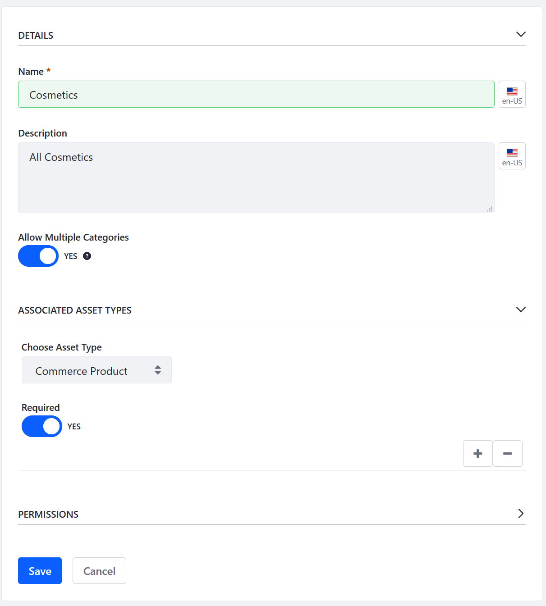
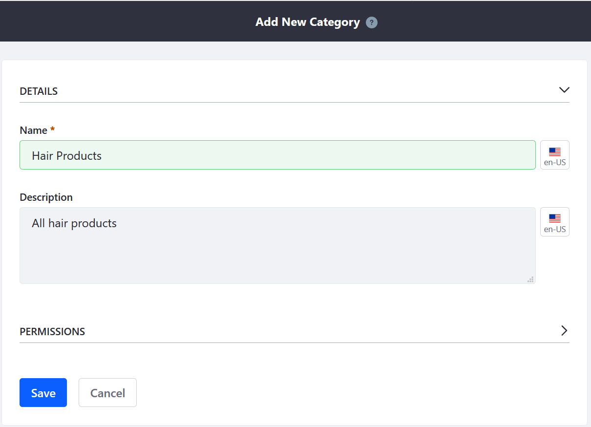
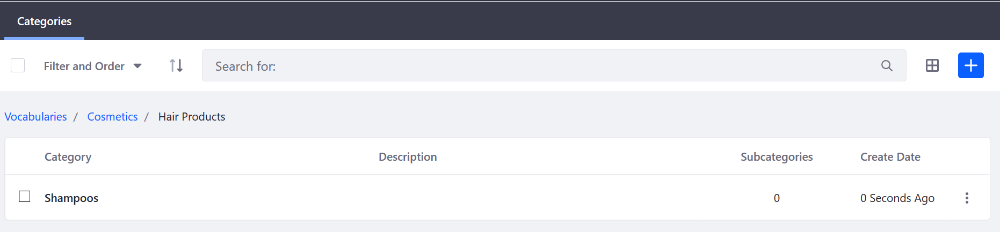
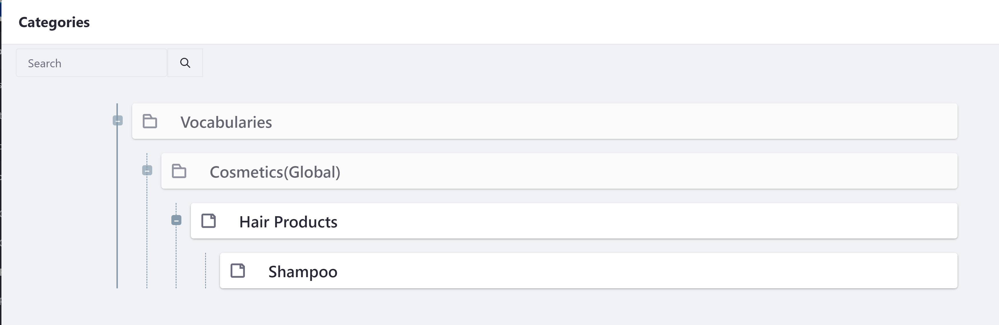
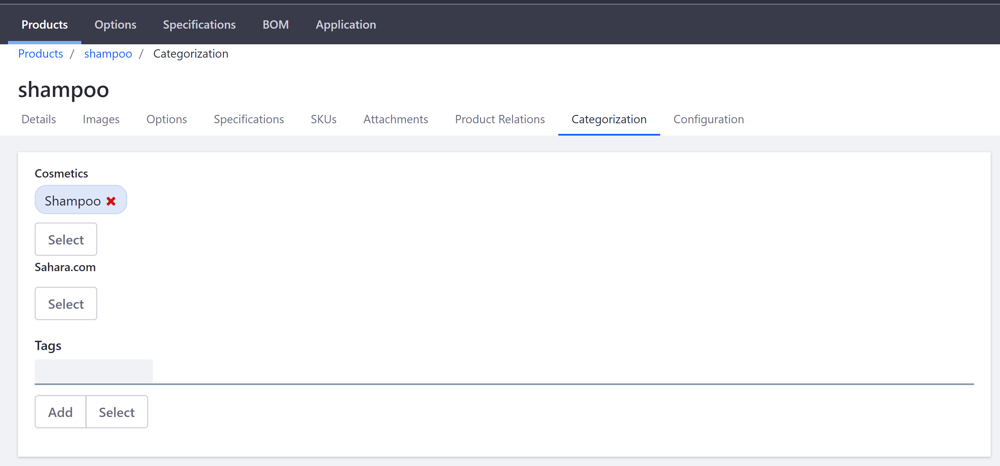

Creating a New Product Category¶
Product Categories are used to organize your products. These groupings allow multiple products to be handled as a single unit. For example, a product category could be used to apply discounts or other offers to a set of products, to assist buyers in finding products, or to promote certain products to a specified account or account group.
This article documents how to create a product category.
Creating a Vocabulary¶
Navigate to the Control Panel →
 Go to Other Site → My Sites → Global.
Go to Other Site → My Sites → Global.Once on the Global site, click Categorization → Categories.
Click the (+) button to create a Vocabulary first.
Enter the following:
Name: Cosmetics
Description: All Cosmetics
Allow Multiple Categories: Yes
Choose Asset Type: Commerce Product
Required: Yes

Click Save.
The new Vocabulary has been created and Categories can now be added.
Creating Categories¶
Because categories can be nested, store owners can organize their categories with subcategories. For example, a category called Hair Products could have its own subcategories such as Shampoo, Hair Gels, and Color Dyes.
To create a Category:
- Click the Vocabulary where the Categories are to be added. To continue the previous example, click Cosmetics.
- Click the (+) button to add a new Category.
- Enter the following:
- Name: Hair Products
- Description: All hair products

- Click Save.
The new Category has been created. You can either create another Category for another product that sits parallel in the hierarchy or create a nested subcategory in the description above. To create a subcategory, click the Hair Products link and then click the (+) button to create another Category. Once the new Category has been created, the hierarchy can be observed in the breadcrumb navigation.

Associating Categories with Products¶
Once the Categories have been created, begin associating them to the products in the catalog.
Navigate to the Control Panel → Commerce → Products.
Click on a product then the Categorization tab. (If you used Minium to create a site with sample data, click Transmission Fluid. Note that the Transmission Fluid product already has been linked to the sample Vocabulary and Category.)
Click on the Select button under the label for the appropriate vocabulary, and in the pop-up that appears the check the box next to each category that applies.

Click Done.
The category is now associated with the product.

Repeat as necessary for all other products that might fall under this category.